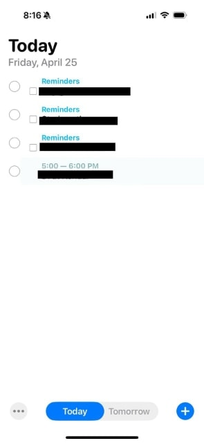

Бесполезная машина
Вчера я пофиксил забавный баг в Агендусе, способом, который напомнил мне Бесполезную машину.
Однажды, Саша прислал мне такой скриншот со словами "я ничего не трогал":

Я на это посмотрел и решил, что это какой-то дикий глюк iOS и такого быть не может — ведь у меня нет режима редактирования списка.
А потом мне Катя прислала точно такой же скриншот, с точно таким же комментарием.
Фак.
Я сел думать, и, спустя какое-то время, выяснил, что даже если ты не включаешь/поддерживаешь режим редактирования списка явно, пользователь в него все равно может перейти, если смахнет (свайпнет) двумя пальцами по списку вверх! Такая вот "фича".
Ну и, конечно, раз ты этот режим не включал, то оказалось, что не так-то просто его и выключить. Но, как говориться, "голь на выдумки хитра" — пришлось написать ту самую бесполезную машину, которая не делает ничего, пока не включится режим редактирования, чтобы взять и сразу его выключить!
Такое вот программирование.